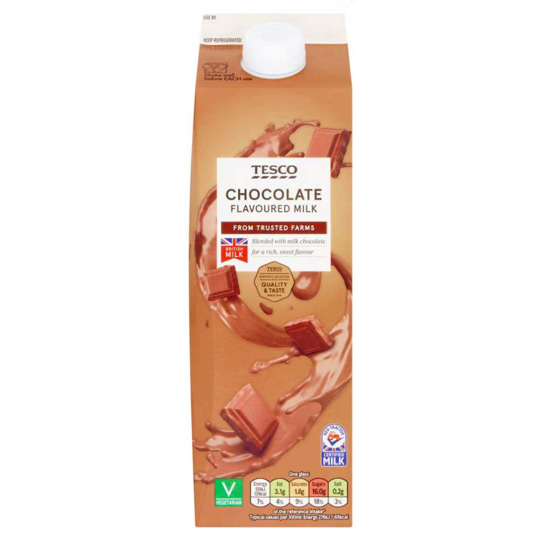

Your training week is well-structured and your understanding of what you need from your nutrition is clear. Your metabolic cart data from VO2 max testing gives useful context: you oxidise carbohydrate at a high rate, even at lower intensities, and your capacity to rely on fat as a fuel is relatively limited. This is not unusual given a high-intensity training background, but it directly shapes the approach. The focus below targets two things: overall carbohydrate availability across the week, and how to apply that at race day to address the power drop in the final stages.
You are currently targeting around 3g/kg on rest days and 5g/kg on active days — both are likely lower than your actual needs. Your metabolic cart data shows a high carbohydrate oxidation rate, meaning demand is above average even at lower intensities. Achieve the new targets through increasing portion sizes of foods you already eat, as well as the swap outlined below.

Chocolate milk is a cost-effective alternative to SIS Rego that meets post-session recovery targets without compromise. At 66kg, aim for 1.0–1.2g/kg carbohydrate (66–79g) and ~0.3g/kg protein (~20g). Chocolate milk has been shown to often outperform premium recovery blends, possibly due to the 3:1 carbohydrate ratio and flavonoids in the cocoa.
On lower-intensity Z2 rides (1–1.5 hours), swap the cereal bar beforehand for a small fat-based snack: a tablespoon of nut butter, a small portion of eggs, or a handful of nuts. This targets those sessions only. VO2 max work, threshold sessions, and the long ride remain fully fuelled as normal. The aim is to build fat oxidation capacity over time, which combines with an aggressive carbohydrate fuelling strategy on race day. Full detail in Section 04.
The most supported explanation for cramping in endurance athletes is neuromuscular fatigue rather than dehydration or electrolyte loss in isolation. In a 2-hour race with 8–10 high-intensity efforts, there is meaningful time spent above critical power, and the fatigue built in the earlier stages accumulates towards muscle control breakdown around the 1.5-hour mark.
Review your power file after races and look at how much time was spent above critical power in the first 45–60 minutes — this will give a useful picture of what is driving the cramp.
From a nutrition standpoint, increasing overall carbohydrate availability — both day-to-day and on race day — is the most direct lever. Personalised sweat data will give a more confident picture of whether your fluid intake is appropriate. See Section 05.
Your metabolic cart data shows high carbohydrate oxidation at lower intensities, meaning there is meaningful room to develop fat oxidation and reduce carbohydrate reliance at this end of your training spectrum. Carbohydrate periodisation is a targeted way to work on this.
Adjusting carbohydrate intake based on the demands of the session rather than eating the same way every day. This supports both performance when quality matters and adaptations linked to fat oxidation and metabolic flexibility — the ability to switch between fuel sources as the work requires it.
Train low does not mean training completely depleted, avoiding carbohydrates entirely, or doing every session fasted. It refers to selected sessions where carbohydrate availability is intentionally reduced beforehand — to create a specific adaptation stimulus, not to compromise training quality.
With five sessions per week, 1–2 low-carbohydrate sessions per week is appropriate — roughly your two Z2 endurance rides. No more than one in three sessions should use this approach, and only where the intensity genuinely supports it. VO2 max sessions, threshold work, and the long ride remain fully fuelled throughout.
Your Tuesday and Thursday endurance rides are the most suitable sessions to trial this. The swap is straightforward: replace the cereal bar before these sessions with a tablespoon of nut butter or a small portion of eggs. Keep in-session fuelling for any session over 90 minutes. Given that maintaining weight around 66kg is a priority, the aim is to reduce pre-session carbohydrate on selected sessions only — not to reduce overall daily calories.
Understanding how much fluid you actually lose during training is more useful than following general guidelines — individual variation is significant. Sweat rates typically range from 0.5–2.5 L/hour, with most people sitting around 1–1.5 L/hour. Your individual rate depends on physiology, environment, and intensity, which is exactly why it is worth measuring.
Given that you have experienced cramping in races and are currently using two 700ml bottles per race, testing will confirm whether your current fluid intake is appropriate, too high, or too low for different conditions.
| Step | Action |
|---|---|
| Step 1 Pre-exercise |
Empty bladder. Weigh in minimal or no clothing. Use the same scales each time. |
| Step 2 During |
Complete a session that reflects your usual training or race intensity. Track all fluid intake — know how much you start and finish with. A trainer-based session works well for controlled conditions. If you urinate, note this separately. |
| Step 3 Post-exercise |
Weigh again in minimal or no clothing as soon as possible after finishing. |
| Step 4 Send data |
Pre/post bodyweight · total fluid intake · session duration · conditions (temperature, humidity if known, indoor/outdoor) · any urine losses noted. I will calculate your sweat rate and translate it into a practical hydration plan. |
Supports strength, power, and repeated high-intensity efforts. Also has potential cognitive benefits, particularly during periods of stress or sleep deprivation.
Dose: 3–5g/day. You are taking 5g — appropriate.
Timing: Any time of day. Taking alongside a meal or post-session chocolate milk aids absorption.
Improves alertness, reduces perceived effort, and enhances endurance and high-intensity performance.
Dose: 200mg (~3mg/kg at 66kg) — well-matched starting point. You are using this correctly.
Timing: 20–45 min before exercise. Your current pre-race timing is appropriate.
Can improve performance in high-intensity efforts lasting roughly 30 seconds to 10 minutes by buffering acid accumulation. Given the repeated sprint format of criterium races, this is worth trialling. A split dosing protocol — dividing the dose across two or three smaller amounts — can reduce gastrointestinal distress if that becomes an issue. Taking it with a small amount of food also helps. I'd be interested to hear how you get on with the Maurten Bicarb product.
Supports general health, cardiovascular and brain health, and may support recovery and inflammation management. You are taking this via NutritionX — appropriate. Dose: 500–1000mg combined EPA and DHA per day. Timing: With meals to aid absorption.
nutritionx.co.uk — Daily Omega-3 Fish OilSupports bone health, immune function, and overall health. Particularly relevant in the UK given limited sunlight from October to March. You are correctly reducing this as sunlight exposure increases — restart supplementation from around October. Dose: 2000–4000 IU/day (50–100 mcg). Timing: With a meal containing some fat to aid absorption.
nutritionx.co.uk — Vitamin D3 + K2 healthspanelite.co.uk — Elite Vitamin D3 4000IU| Brand | Code | Discount |
|---|---|---|
| Science in Sport (SIS) | SIS-MOD | 30% off (full price products only) |
| NutritionX | NXCLUB | 30% off |
| Healthspan Elite | MOD25 | 25% off |